8. L2VPN VPLS provisioning¶
Time: 30 minutes
Objective: Provision a multipoint LAN (VPLS) from CNC.
Configure VPLS with a Single-homing configuration on the CE1 side (connected only to PE1) and an All-Active Multi-homing configuration on the CE2 side (connected to both PE2 and PE3).
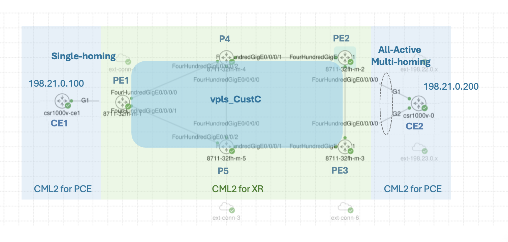
| Field | Value |
|---|---|
| Service name | CustC_vpls |
| vpn-type | multi-point (evpn) |
| Endpoints | PE1, PE2, PE3 |
| Redundancy | CE1-PE1: Single-homing, CE2-PE2&PE3: All-Active Multi-homing |
| Transport | SRv6 |
8.1 CE Interface Settings¶
The CEs are located in CML for PCE (a different CML instance from the one for the P/PE routers).
Open CML for PCE from the Firefox bookmarks bar (use private window).
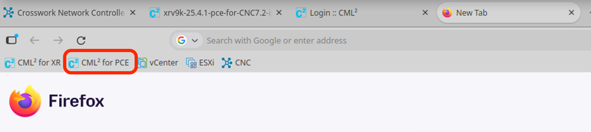
Then select the lab xrv9k-25.4.1-pce-for-CNC7.2-ipv6.
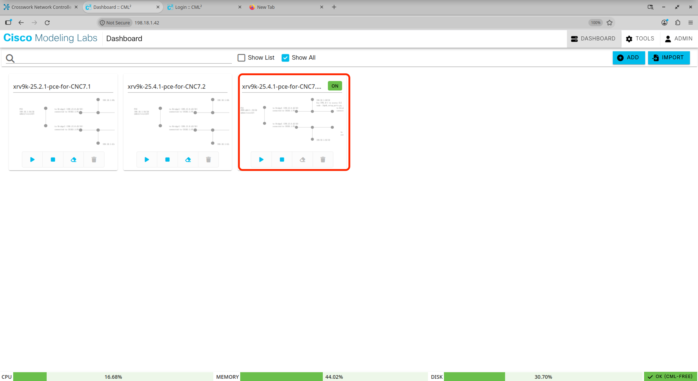
CE1 is named csr1000v-ce1, and CE2 is named csr1000v-0 in the CML.
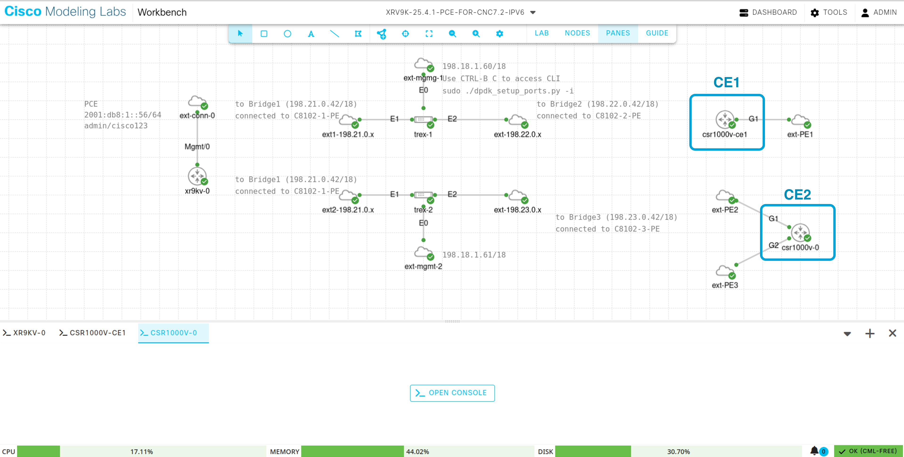
CE1 (CSR1000V-CE1)
Confirm that 198.21.0.100 is already configured on interface Gi1 of CE1, which faces PE1.
ce1>en
ce1#show run int GigabitEthernet 1
Building configuration...
Current configuration : 121 bytes
!
interface GigabitEthernet1
ip address 198.21.0.100 255.255.255.0
negotiation auto
no mop enabled
no mop sysid
end
ce1#
CE2 (CSR1000V-0)
Clear the configuration of interfaces Gi1 and Gi2 on CE2, which face PE2 and PE3, and reconfigure them as member ports of Port-channel 1.
conf t
default interface Gi 1
default interface Gi 2
!
interface Port-Channel 1
ip address 198.21.0.200 255.255.255.0
!
interface range GigabitEthernet 1-2
channel-group 1
no negotiation auto
end
8.2 Configure Bundle-Ether on PE2/PE3¶
In this lab, the PEs and CEs are connected through an external connector, so LACP negotiation cannot be performed. Therefore, force the bundle member to come up by using mode on.
PE2 and PE3
interface FourHundredGigE0/0/0/2
bundle id 1 mode on
no shut
!
interface Bundle-Ether1
lacp system mac 2323.2323.2323
!
Go to Device Management > Network Devices, select PE2 and PE3, and choose Sync-from devices to NSO from Actions.
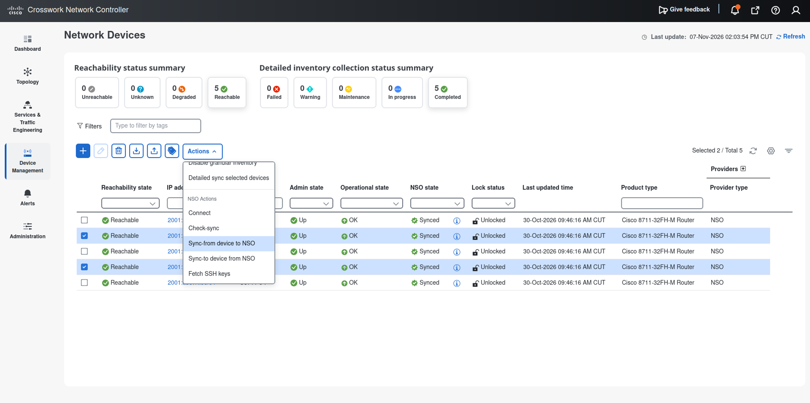
8.3 VPLS Provisioning¶
-
Go to Services & Traffic Engineering > Provisioning (NSO), then click L2VPN-Service.
-
Load Home > cnc-payloads > VPLS_CustC.json.
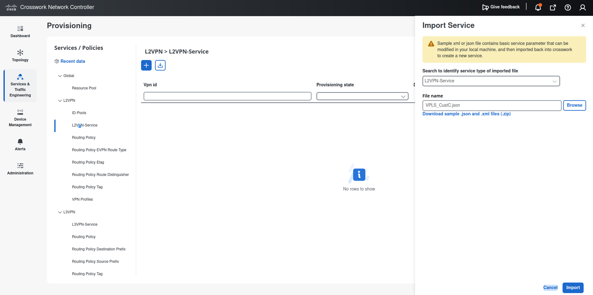
VPLS_CustC.json
{ "ietf-l2vpn-ntw:l2vpn-ntw": { "vpn-services": { "vpn-service": [ { "vpn-id": "CustC_vpls", "vpn-type": "ietf-vpn-common:mpls-evpn", "vpn-service-topology": "ietf-vpn-common:any-to-any", "vpn-nodes": { "vpn-node": [ { "vpn-node-id": "C8711-1-PE", "signaling-option": { "evpn-policies": { "mac-learning-mode": "ietf-l2vpn-ntw:control-plane" } }, "vpn-network-accesses": { "vpn-network-access": [ { "id": "0", "interface-id": "FourHundredGigE0/0/0/2", "connection": { "encapsulation": { "encap-type": "ietf-vpn-common:untagged-int" } } } ] }, "cisco-l2vpn-ntw:te-service-mapping": { "srv6": { "locator": "srv6" }, "te-mapping": { "odn": { "route-policy": [ "POLICY3" ] } } } }, { "vpn-node-id": "C8711-2-PE", "signaling-option": { "evpn-policies": { "mac-learning-mode": "ietf-l2vpn-ntw:control-plane" } }, "vpn-network-accesses": { "vpn-network-access": [ { "id": "0", "interface-id": "Bundle-Ether1", "connection": { "encapsulation": { "encap-type": "ietf-vpn-common:untagged-int" } } } ] }, "cisco-l2vpn-ntw:multi-home": { "ethernet-segment-identifier": "23.23.00.00.00.00.00.00.00" }, "cisco-l2vpn-ntw:te-service-mapping": { "srv6": { "locator": "srv6" }, "te-mapping": { "odn": { "route-policy": [ "POLICY3" ] } } } }, { "vpn-node-id": "C8711-3-PE", "signaling-option": { "evpn-policies": { "mac-learning-mode": "ietf-l2vpn-ntw:control-plane" } }, "vpn-network-accesses": { "vpn-network-access": [ { "id": "0", "interface-id": "Bundle-Ether1", "connection": { "encapsulation": { "encap-type": "ietf-vpn-common:untagged-int" } } } ] }, "cisco-l2vpn-ntw:multi-home": { "ethernet-segment-identifier": "23.23.00.00.00.00.00.00.00" }, "cisco-l2vpn-ntw:te-service-mapping": { "srv6": { "locator": "srv6" }, "te-mapping": { "odn": { "route-policy": [ "POLICY3" ] } } } } ] }, "cisco-l2vpn-ntw:auto-evi-id": [ null ], "cisco-l2vpn-ntw:bridge-group": "BRIDGE", "cisco-l2vpn-ntw:service-assurance": { "monitoring-state": "enable", "profile-name": "Gold_L2VPN_ConfigProfile system", "rule-name": "Rule-L2VPN-MP system" } } ] } } } -
Confirm that the following parameters are set.
- vpn-id:
CustC_vpls - vpn-type:
mpls-evpn - vpn-service-topology:
any-to-any - auto-evi-id: enabled
- bridge-group:
BRIDGE
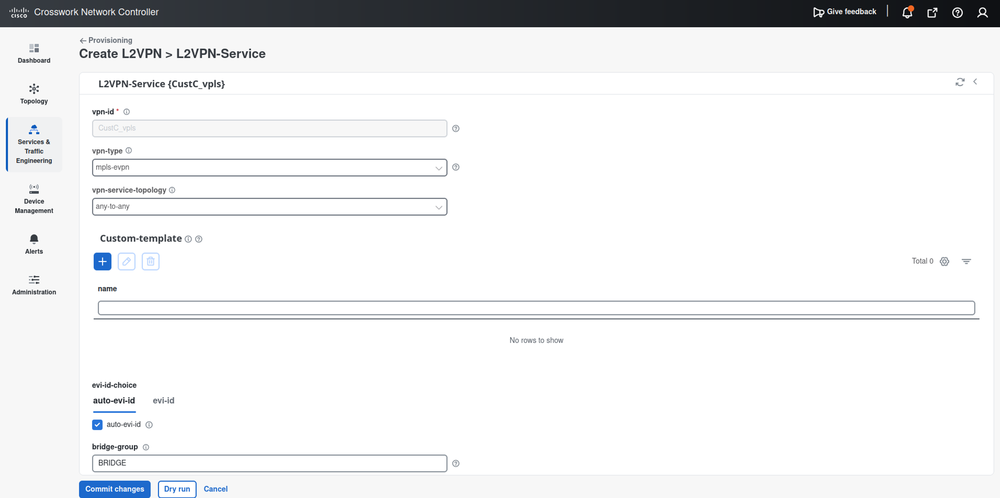
- vpn-node: C8711-1-PE
- mac-learning-mode: control-plane
- vpn-network-access: FourHundredGigE0/0/0/2
- encap-type: untagged-int
- srv6 locator:
srv6
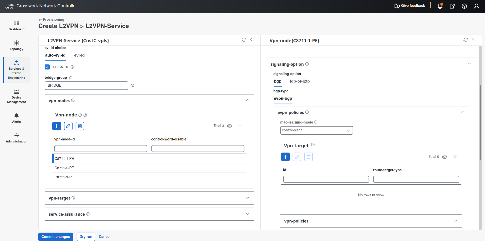
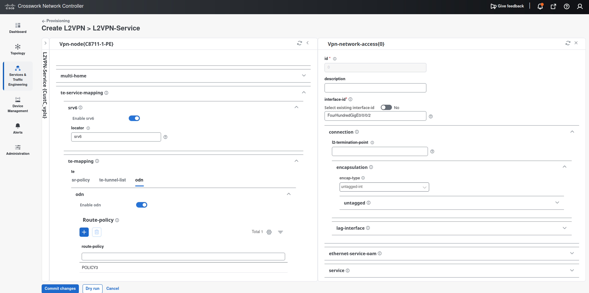
- vpn-node: C8711-2-PE
- mac-learning-mode: control-plane
- vpn-network-access: Bundle-Ether1
- encap-type: untagged-int
- multi-home:
- ethernet-segment-identifier: 23.23.00.00.00.00.00.00.00
- srv6 locator:
srv6
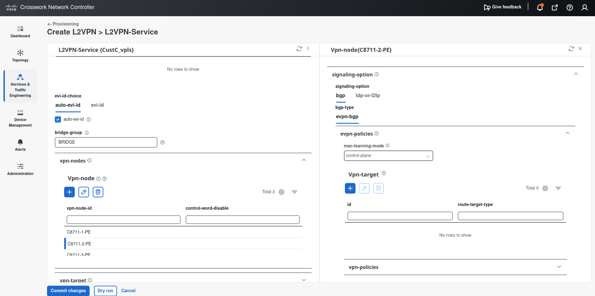
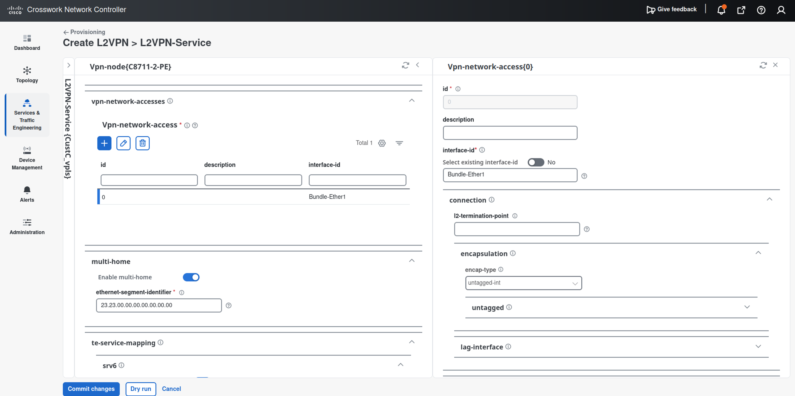
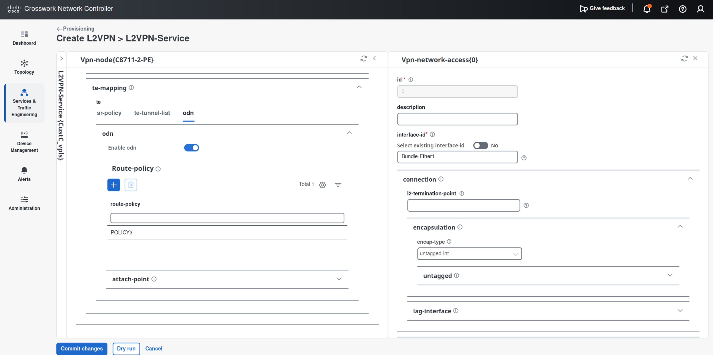
- vpn-node: C8711-3-PE
- mac-learning-mode: control-plane
- vpn-network-access: Bundle-Ether1
- encap-type: untagged-int
- multi-home:
- ethernet-segment-identifier: 23.23.00.00.00.00.00.00.00
- srv6 locator:
srv6
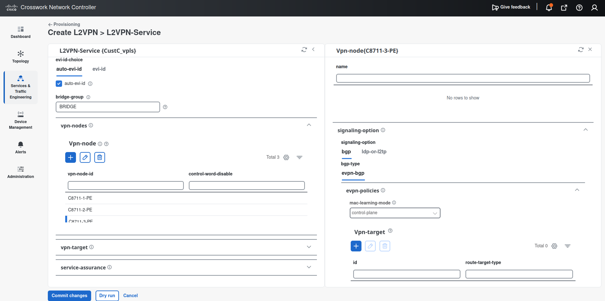
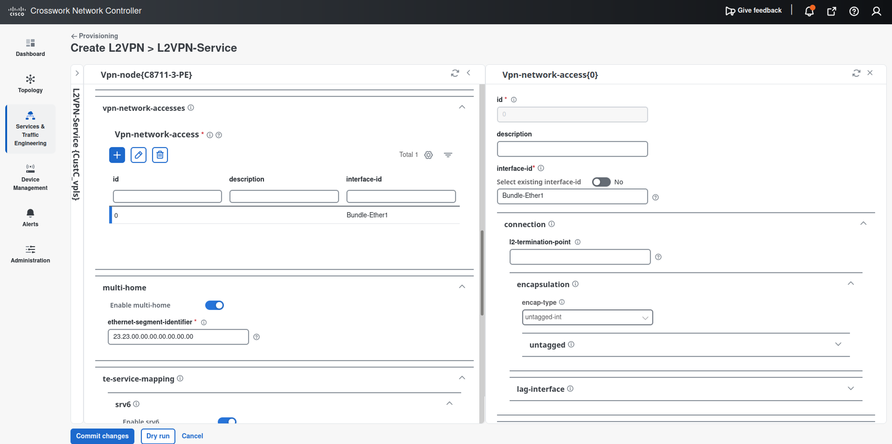
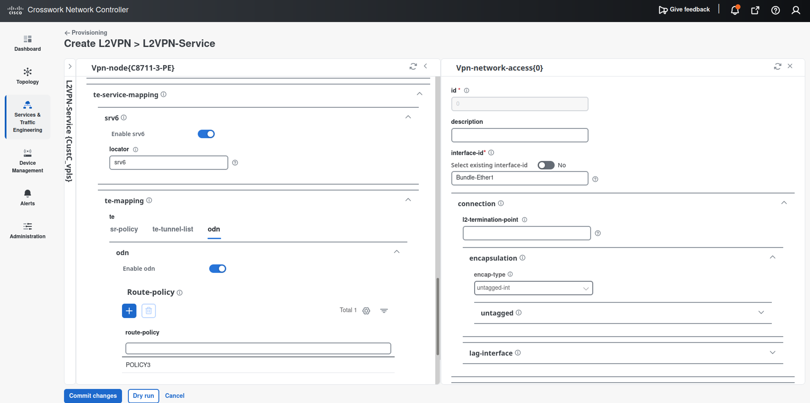
Service Assurance
- enable
service-assurance - monitoring state: enable
- preservation: remove (delete all historical data when monitoring stops)
- profile-name:
Gold_L2VPN_ConfigProfile system - rule-name:
Rule-L2VPN-MP system
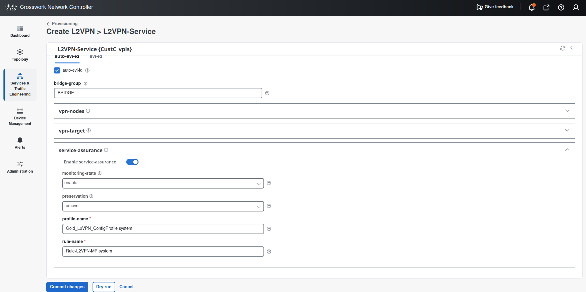
- vpn-id:
-
Click Dry-run, and then click Commit changes.
8.4 Confirm the VPLS¶
via CNC GUI¶
- Open Services & Traffic Engineering > VPN Services.
-
Select
CustC_vpls.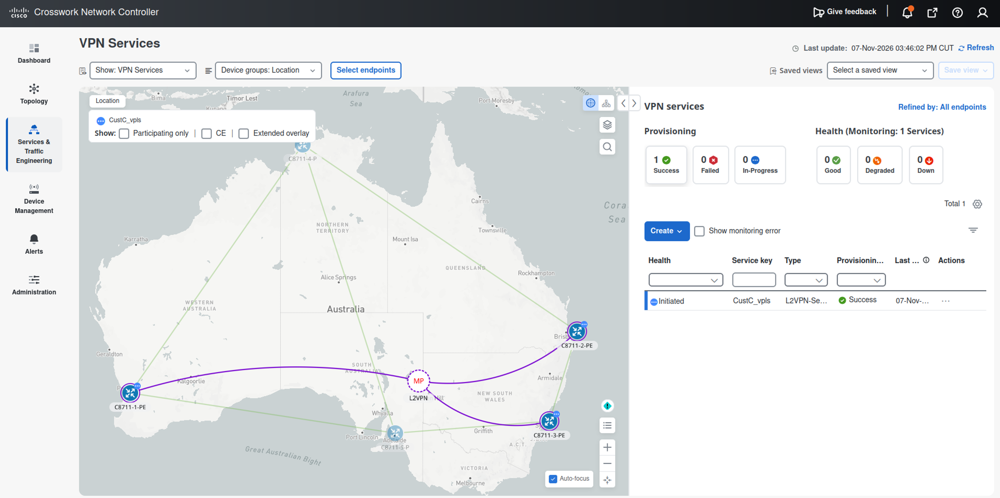
via CLI¶
On PE1/PE2/PE3:
Confirm that uDT2U/uDT2M SIDs are assigned to CustC_vpls.
RP/0/RP0/CPU0:C8711-1-PE#show segment-routing srv6 locator srv6 sid
Sat Nov 7 15:47:22.551 UTC
SID Behavior Identification Owner State RW
-------------------------- ---------------- -------------------------------- ------------------ ----- --
fcbb:bb00:1:: uN (PSP/USD) 'default':1 sidmgr InUse Y
fcbb:bb00:1:e000:: uA (PSP/USD) [FH0/0/0/0, Link-Local]:0 isis-1 InUse Y
fcbb:bb00:1:e001:: uA (PSP/USD) [FH0/0/0/1, Link-Local]:0 isis-1 InUse Y
fcbb:bb00:1:e002:: uB6 (PSP/USD Insert.Red) 'srte_c_10_ep_2001:db8::2' (10, 2001:db8::2) xtc_srv6 InUse Y
fcbb:bb00:1:e003:: uB6 (PSP/USD Insert.Red) 'srte_c_20_ep_2001:db8::3' (20, 2001:db8::3) xtc_srv6 InUse Y
fcbb:bb00:1:e004:: uDT2U 100:0 l2vpn_srv6 InUse Y
fcbb:bb00:1:e005:: uDT2M 100:0 l2vpn_srv6 InUse Y
RP/0/RP0/CPU0:C8711-1-PE#
Confirm that MAC addresses are learned between the PEs.
You may not see any address because it takes time.
RP/0/RP0/CPU0:C8711-1-PE#show evpn evi vpn-id 100 mac
Sat Nov 7 15:51:19.199 UTC
VPN-ID Encap MAC address IP address Nexthop Label SID
---------- ---------- -------------- ---------------------------------------- --------------------------------------- -------- ---------------------------------------
100 SRv6 3e0c.fefb.7071 :: FourHundredGigE0/0/0/2 0 fcbb:bb00:1:e004::
100 SRv6 62ab.683d.a500 :: 2001:db8::2 IMP-NULL fcbb:bb00:2:e002::
100 SRv6 62ab.683d.a500 :: 2001:db8::3 IMP-NULL fcbb:bb00:3:e002::
100 SRv6 e613.d71f.529b :: FourHundredGigE0/0/0/2 0 fcbb:bb00:1:e004::
RP/0/RP0/CPU0:C8711-1-PE#
You can confirm that PE2 and PE3 are operating in all-active multi-homing mode by using the following command.
On PE2/PE3:
RP/0/RP0/CPU0:C8711-2-PE#show evpn ethernet-segment esi 0023.2300.0000.0000.0000 detail
Sat Nov 7 16:11:46.047 UTC
Ethernet Segment Id Interface Originating IP
------------------------ ---------------------------------- --------------------
0023.2300.0000.0000.0000 BE1 2.2.2.2
3.3.3.3
ES to BGP Gates : Ready
ES to L2FIB Gates : Ready
Main port :
Interface name : Bundle-Ether1
Interface MAC : 0006.04b9.a505
IfHandle : 0x7800002c
State : Up
Redundancy : Not Defined
ESI ID : 1
ESI type : 0
Value : 0023.2300.0000.0000.0000
ES Import RT : 2323.0000.0000 (from ESI)
Topology :
Operational : MH, All-active
Configured : All-active (AApF) (default)
Service Carving : Auto-selection
Multicast : Disabled
Convergence :
Peering Details : 2 Nexthops
2.2.2.2 [MOD:P:00:T]
3.3.3.3 [MOD:P:00:T]
Service Carving Synchronization:
Mode : NTP_SCT
Peer Updates :
2.2.2.2 [SCT: 2026-11-07 15:45:44.1794066]
3.3.3.3 [SCT: 2026-11-07 15:45:47.1794066]
Service Carving Results:
Forwarders : 1
Elected : 1
Not Elected : 0
EVPN-VPWS Service Carving Results:
Primary : 0
Backup : 0
Non-DF : 0
MAC Flush msg : STP-TCN
Peering timer : 3 sec [not running]
Recovery timer : 30 sec [not running]
Carving timer : 0 sec [not running]
Revert timer : 0 sec [not running]
HRW Reset timer : 5 sec [not running]
Local SHG filters :
(mpls) None
(srv6) 1:16
Remote SHG filters: 1
(srv6) 1:16 : nexthop 2001:db8::3
Access signal mode: Bundle OOS
RP/0/RP0/CPU0:C8711-2-PE#
8.5 Connectivity Check¶
Because of lab constraints, CE2 cannot receive ARP replies, so configure a static ARP entry on CE2.
On CE1(csr1000v-ce1):
ce1#show arp
Protocol Address Age (min) Hardware Addr Type Interface
Internet 198.21.0.100 - 5254.004d.9a65 ARPA GigabitEthernet1
Internet 198.21.0.200 5 001e.e699.5dc0 ARPA GigabitEthernet1
ce1#
On CE2(csr1000v-0):
ce2#show arp
Protocol Address Age (min) Hardware Addr Type Interface
Internet 198.21.0.100 0 Incomplete ARPA
Internet 198.21.0.200 - 001e.e699.5dc0 ARPA Port-channel1
ce2#
ce2#conf t
ce2(config)#arp 198.21.0.100 5254.004d.9a65 arpa
ce2(config)#end
ce2#show arp
Protocol Address Age (min) Hardware Addr Type Interface
Internet 198.21.0.100 - 5254.004d.9a65 ARPA
Internet 198.21.0.200 - 001e.e699.5dc0 ARPA Port-channel1
ce2#
Ping between the CEs.
Note
This lab can be unstable because it uses external connectors for PE-CE connectivity. Pings may occasionally fail.
ce2#ping 198.21.0.100
Type escape sequence to abort.
Sending 5, 100-byte ICMP Echos to 198.21.0.100, timeout is 2 seconds:
!!!!!
Success rate is 100 percent (5/5), round-trip min/avg/max = 4/6/13 ms
ce2#
8.6 Packet Capture (Optional)¶
Use the packet capture feature of CML to observe the encapsulation in the IPv6 header.
Unicast Traffic (uDT2U)
1. Start a ping from CE1 to CE2.
Due to lab constraints, the ping may not succeed, but this is not a problem.
On CE1(csr1000v-CE1):
ce1#ping 198.21.0.200 repeat 10
-
Right-click the link between
P5andPE3and start a packet capture. -
Select the ICMP echo request packet from 198.21.0.100 to 198.21.0.200.
-
Find the IPv6 header. The destination address contains the uDT2U SID of PE3 (for example, fcbb:bb00:3:e002::).
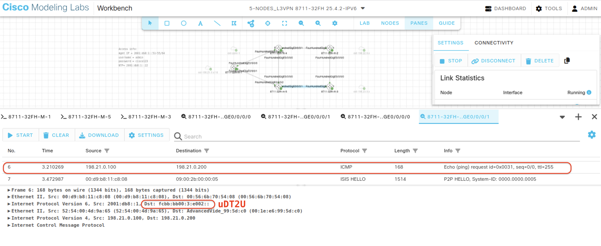
Unknown Unicast Traffic (uDT2M)
1. Start a ping from CE1 to the unknown address.
On CE1(csr1000v-CE1):
ce1#ping 198.21.0.2 repeat 10
-
Right-click the link between
P5andPE3and start a packet capture. -
Select the ARP packet from 198.21.0.100 to 198.21.0.2.
-
Find the IPv6 header. The destination address contains the uDT2M SID of PE3 (for example, fcbb:bb00:3:e003::).
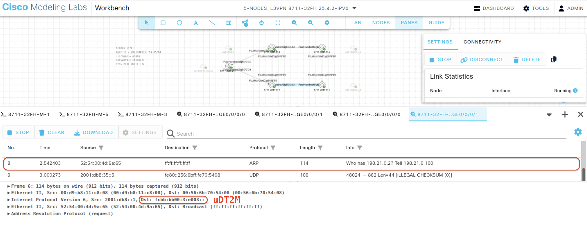
8.7 Service Health¶
- Open Services & Traffic Engineering > VPN Services.
- Confirm that the health of
CustC_vplsis Good. -
Click Actions > Assurance graph
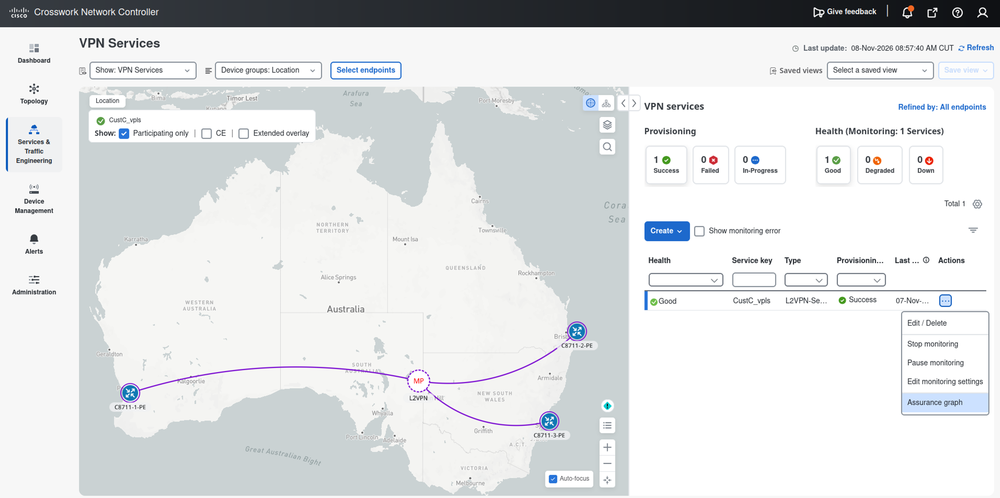
-
Drill down into this graph and check the status.
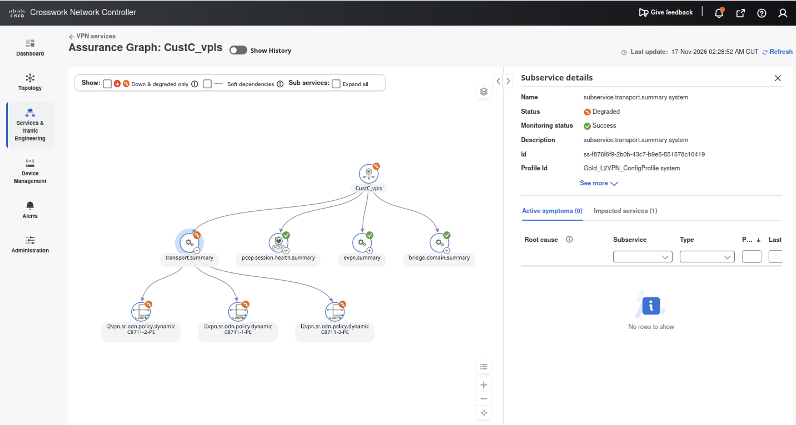
In this case, although steering to the ODN policy was configured, these symptoms occurred because the ODN policy had not yet been instantiated at that point.
8.8 Done when¶
-
CustC_vplsis up and shown as multi-point in VPN Services.
8.9 Clean-up rule¶
-
Go to Services & Traffic Engineering > Provisioning (NSO), then click L2VPN-Service.
-
Select Delete dry run from Actions.
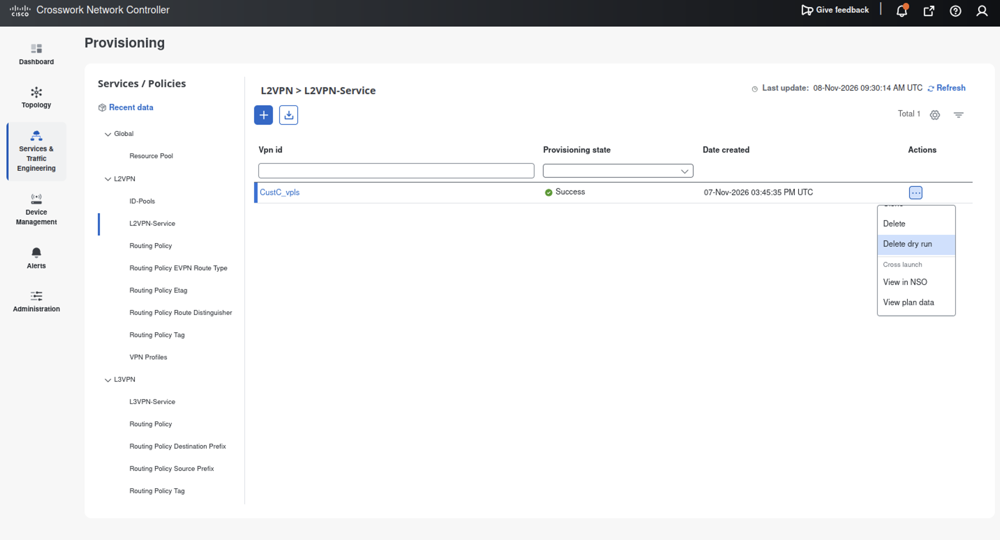
-
Check the configuration diff and click Delete.
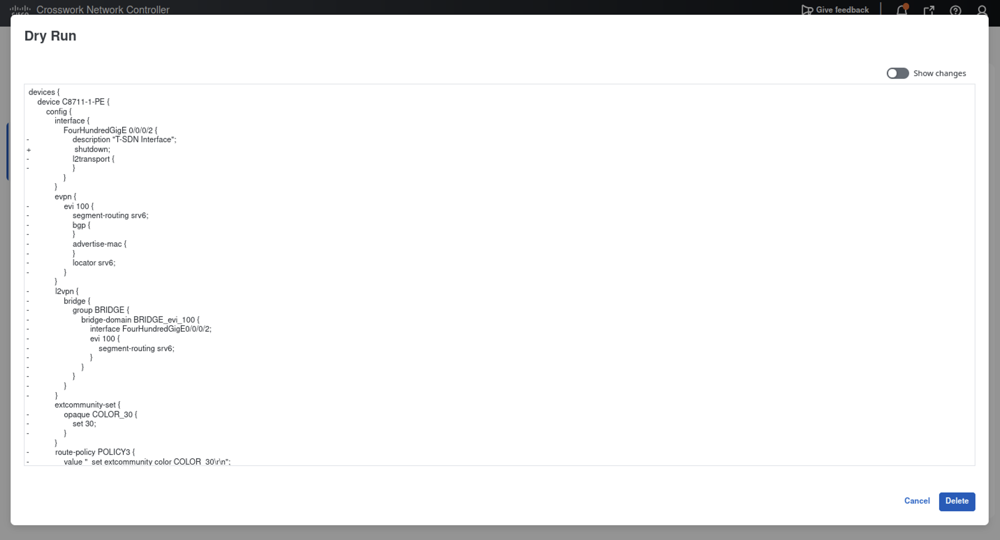